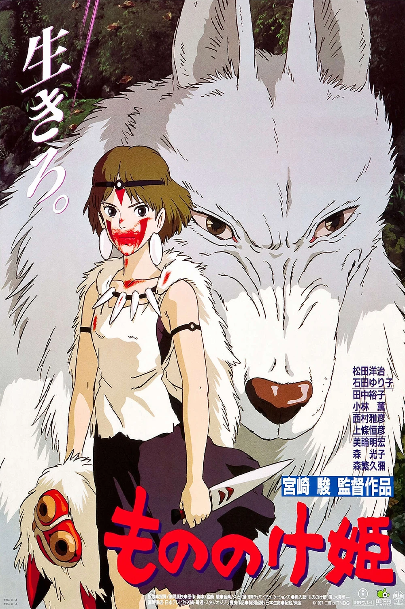
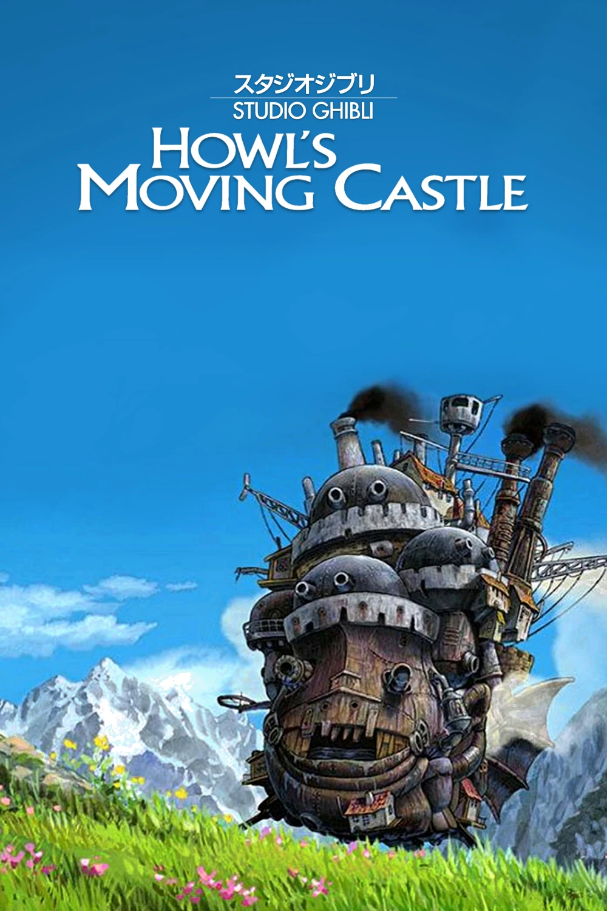
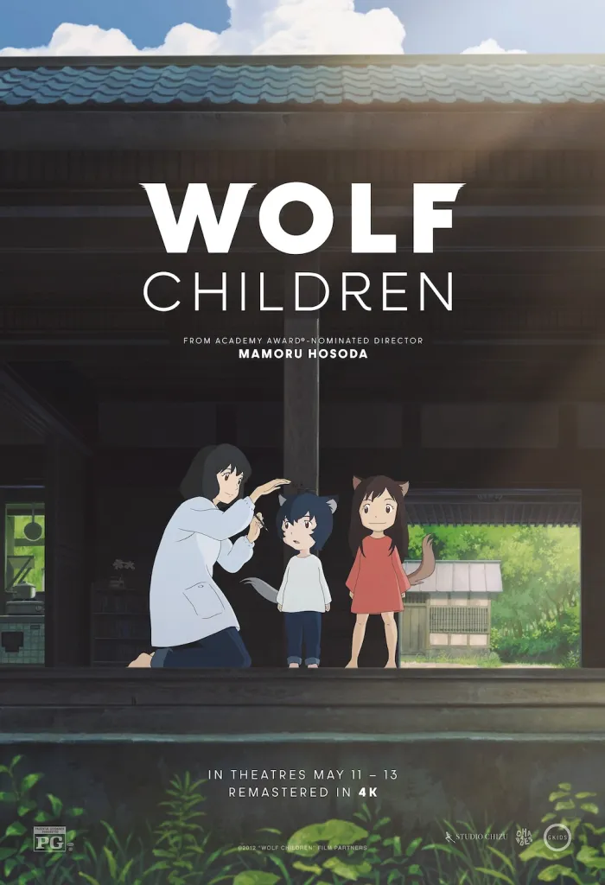
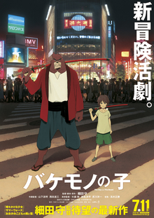
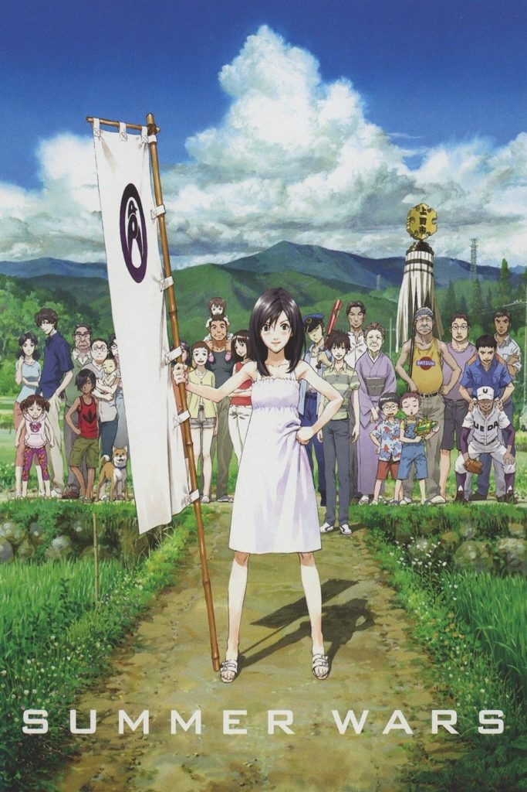

Our Movies
We are showing six of my favourite anime movies throughout November 2026. There is a mix of action, fantasy and stories about family and growing up. Have a look below and find something you would like to watch.
Screenings run throughout November 2026. All times are Melbourne time. Adult tickets are $18, student tickets are $15, and child tickets are $12.
Princess Mononoke

Genre: Fantasy and Adventure
Australian rating: M
Running time: 133 minutes
Ashitaka leaves his village looking for a way to break a curse. Along the way, he finds a town fighting against the animals and spirits of a nearby forest. He also meets San, a girl raised by wolves. He tries to stop the fighting, but both sides have their own reasons for refusing to back down.
Adult ticket: $18.00 AUD
Screenings: Fridays at 6:30pm during November.
Book Princess MononokeHowl's Moving Castle

Genre: Fantasy and Adventure
Australian rating: PG
Running time: 119 minutes
Sophie works in a hat shop until a witch turns her into an old woman. She leaves home to find help and ends up in Howl's moving castle. Living with a wizard, his apprentice and a talking fire is very different from her old life. While Sophie tries to break the spell, a war is getting closer.
Adult ticket: $18.00 AUD
Screenings: Saturdays at 2:00pm during November.
Book Howl's Moving CastleWolf Children

Genre: Fantasy and Drama
Australian rating: PG
Running time: 117 minutes
Hana has two children who are part human and part wolf. After their father dies, she has to raise them on her own while keeping their secret. She moves to the countryside to give them more space. As Yuki and Ame grow up, they begin to want different things and must decide how they want to live.
Adult ticket: $18.00 AUD
Screenings: Sundays at 1:00pm during November.
Book Wolf ChildrenSword of the Stranger
Genre: Action and Adventure
Australian rating: MA15+
Running time: 103 minutes
Kotaro and his dog are on the run from a group of warriors. They meet a wandering swordsman who agrees to help them reach a temple. The swordsman has his own reasons for avoiding a fight, but protecting Kotaro makes that difficult. There are plenty of sword fights, along with a friendship that grows during their journey.
Adult ticket: $18.00 AUD
Screenings: Saturdays at 7:00pm during November.
Book Sword of the StrangerThe Boy and the Beast

Genre: Fantasy and Action
Australian rating: PG
Running time: 119 minutes
A boy living on the streets finds his way into a world full of beasts. There he meets Kumatetsu, a warrior who takes him on as an apprentice. They argue a lot at first, but slowly become close. As the boy gets older, he starts going back to the human world and questions where he really belongs.
Adult ticket: $18.00 AUD
Screenings: Thursdays at 6:30pm during November.
Book The Boy and the BeastSummer Wars

Genre: Science Fiction and Adventure
Australian rating: PG
Running time: 114 minutes
Kenji goes with Natsuki to meet her family, where he has to pretend to be her boyfriend. Things get much worse when an online world called OZ comes under attack. The problems start affecting the real world too. Kenji ends up working with Natsuki's large family to stop the attack, with everyone finding a way to help.
Adult ticket: $18.00 AUD
Screenings: Sundays at 4:00pm during November.
Book Summer Wars